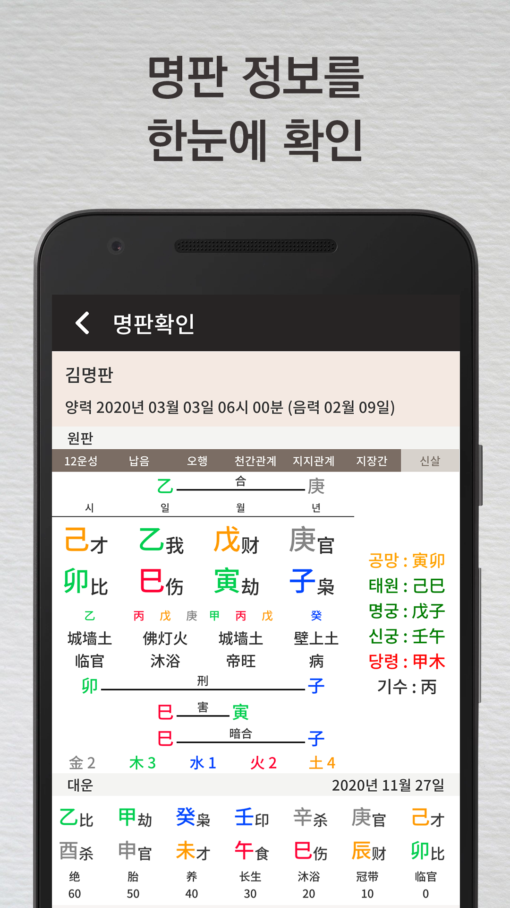
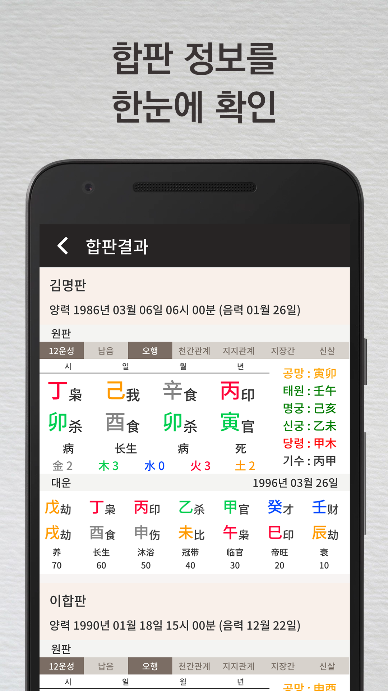
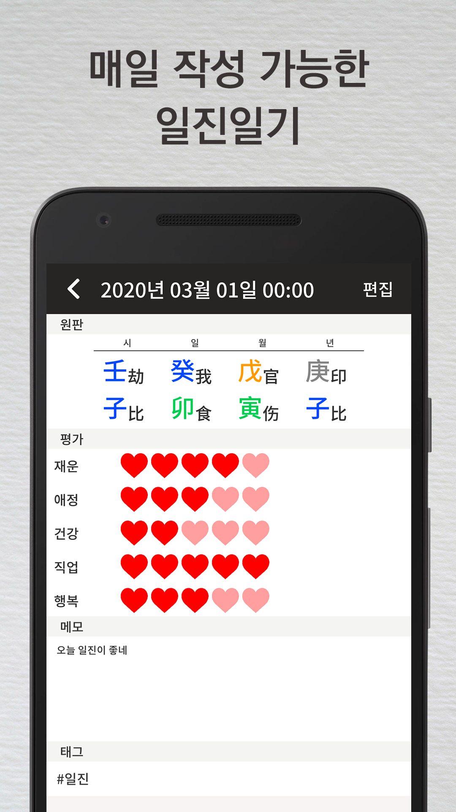
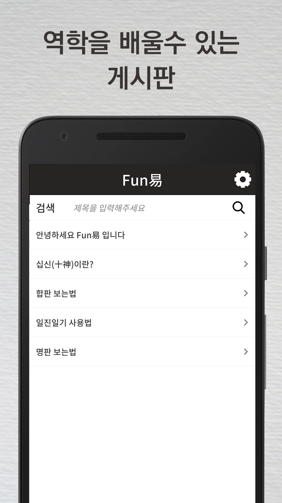

Fun易
어플리케이션 소개




1. 공부 최적화
: 다양한 정보를 보여 줍니다. (지지관계,천간관계, 납음, 12운성, 신살, 명궁, 태원, 신궁, 기수 등)
2. 궁합을 쉽게
: 두개의 만세력(명판)을 동시에 보여줍니다.
3. 쉬운 공유
: 내보내기 기능으로 역학 커뮤니티에서 질문을 쉽게, 혹은 메신저에서 쉽게 질문하게
4. 목록 저장
: 디테일한 정보를 저장할 수 있습니다. (관계, 발생한 사건)
기기를 바꿔도 늘 저장된 목록을 이용 가능
5. 일진 일기
: 스스로 운세를 기록하면서, 자신에 대한 데이터를 쌓아 갈 수 있습니다.
6. 다양한 설정
: 보여주는 순서, 자체정의 기능 들이 존재합니다.
7. 스승없이 독학자를 위한 공부글
: 역학 공부를 위한 오리지널 글들이 기획자에 의해서 작성되어 올라갑니다.
목표는 가장 정확하고 사용하기 쉬운 만세력이고, 점진적 기능 개선을 추구합니다.
지원 Email : goldmoonsltd@gmail.com
지원 Phone : +1 08073575784